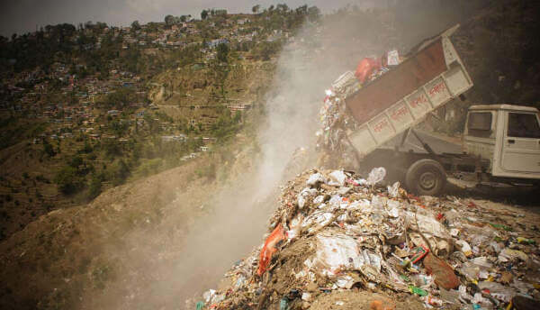

Awareness raising
Changing deeply ingrained habits requires a great deal of awareness about the destructive effects of current practices. The best agents of change are the youth who have proved to be committed to this cause and innovative in imagining strategies to clean and green their surroundings. Representatives of various high schools in Almora meet every first Saturday of the month to plan an activity for the month. The Green Hills team has made presentations to school and university students on alternative methods of waste management. The ‘Green Hills Club’ was created by the students themselves who followed up on these presentations by conducting rallies in the town and getting shop keepers to sign a promise to keep the market clean.
Wall writing is an effective way of creating public opinion. The students of Adam’s Inter College worked hard to clean a slope on the edge of the school campus that had become a garbage dump. They then painted messages near the gate of the school to promote segregation of waste at source.
- Wet waste for composting
- Dry waste for recycling
- Insanitary waste for incineration
Visit Our photo gallery for more
To prevent the leaching of heavy metals contained in e-waste into our soil and water, Green Hills has appealed to the public to deposit their e-waste at the Nagar Palika until June 5. There are collection centres in schools as well where Green Hills has invited students to participate. All the e-waste collected will be sent to Attero’s state-of-the-art recycling facility in Roorkee. For the first time, a Flash mob was organised on May 21 at five different spots in town to convey this message. The students of D’Shadow Dance Academy danced to ‘Badtameez Dil’ taking shoppers by surprise. We hope in this way to prevent the dumping and burning of e-waste that is a growing menace to the environment and to public health.
Applying the three R's
Since May 2013, when the new Municipal Council was elected, frequent meetings have been held with the Chairperson, the Executive Officer, the Safai Nirakshak and the Ward members to push for a change in current methods of waste collection and disposal in the town which are harmful to the environment as well as to public health.
- Segregation at source and door-to-door collection
We are promoting the segregation of waste at source into three categories:
WET Compostable waste DRY
Recyclable wasteDIRTY
Insanitary waste
Vegetable and fruit peels, tea leaves, coffee grounds, left-over food, dairy products, egg shells, meat, fish, garden waste
Plastic, paper, carton, glass pieces and bottles, shoes, iron, aluminium foil, blades, tins, bulbs, batteries, e-waste
House sweepings, hair, nails, babies’ diapers, pads, bandages, tissues, medicines, laminates (plastic and aluminium stuck together like chip and pan packets), condoms, etc.In some localities outside the town, we are organizing door-to-door collection of it followed by vermi-composting at neighbourhood level of wet waste, sale of recyclables to waste traders and controlled incineration of insanitary waste. A monthly contribution from residents and commercial establishments is being collected for this service. We are encouraging the Nagar Palika to do likewise in the town so as to put an end to dumping and open burning of waste on our hillsides.

- Ban on plastic carry bags
Petitions have been submitted to the District Magistrate to enforce the ban on plastic carry bags by regular inspection of the market during which carry bags are confiscated and fines imposed on vendors that are distributing them. Some action was taken following a High Court order for all of Uttarakhand issued in January 2015 but has not been continued.
- Recycling of plastic waste
On September 27, 2014 a demonstration was organised to promote recycling of plastic waste and to end dumping of it by creating a ‘mountain of plastic’ to show how much could be recycled.
As a follow up to this, Green Hills obtained a technical paper on the use of plastic waste in road construction from Dr.Vasudevan, who is a pioneer of this in South India. This has been shared with the Public Works Department, Kumaon, the Nagar Palika, the District Magistrate, the Chief Minister and the Prime Minister. The PWD has responded favourably to this request and intends to build half a kilometre in each area to test this method in the hills. Since a ton of plastic is required for every kilometre of road, Green Hills asked the Nagar Palika to establish a buy-back centre in town.

This is now in operation. will continue to push for this solution to the dual problems of pollution from dumping and burning of plastics and the bad condition of roads in the region. Our Youth Committee members are encouraging people in their locality to deposit their plastic waste at a central point from which the Nagar Palika can pick it up. This can then be compacted with the machine that was installed in 2012 and has not been used so far. We hope in this way to improve the road network while reducing pollution.